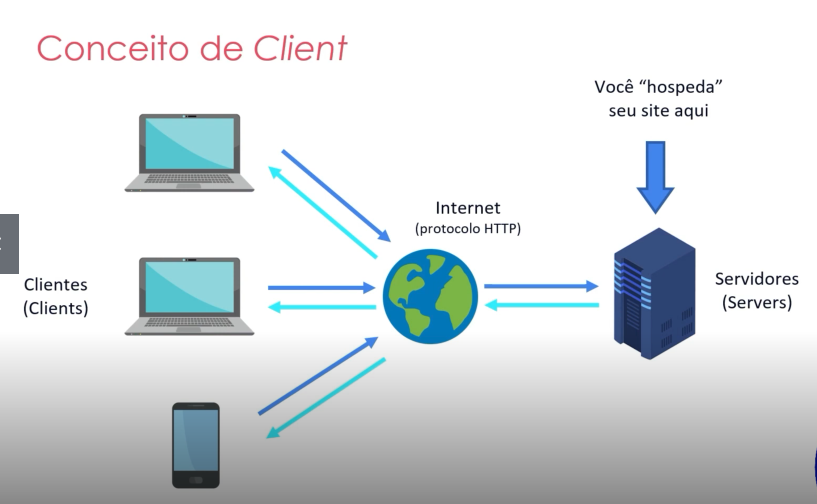
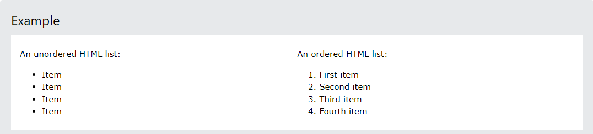

First Steps with HTML
@obassetti
Index:
What is Servers ?
back to index
Basically server, is the "computer", who gonna storage the informations asked by the Clients.
In big companies they're bigger than we think and can storage a lot of informations, with no problems.
A conjunt of "Servers" can be denomited by "Data Centers". Example below:

Types of Servers
back to index
- Proxy its a server, who make the intermediation between what was searched and the results, putting permissions in what can be acess or not. (ex: malicious websites)
- Firewall its a server, with a system, executing inside, who gonna make the extern safety. (ex: someone trying to send something to the server, the firewall will verify everything before, letting go to the server).
- Email its a server, who storage the emails, both sent and received.
- Intranet its a server, who the devices can comunicate directly with the server, without acess to the internet. (ex: www.company.instranet.com)
- DNS its a server, who every device have a DNS, so the server verify if, your device is allowed to go, redirecting to the IP, and whatever site you want to go.
What is Clients ?
back to index
Basically Is the part of the comunication (the device), who receive and consume the informations sent by the server. Ex: Smartphones/Computers who comunicate by the internet with the server.

What is Browsers ?
back to index
The Browsers are basically, the programs created by companies, who are utilized to open/execute a arquive. Every Browser follow the rule of W3C patterns.

What is a "Programming Language" ?
back to index
The conceit is: "Written and formal language, which specifies a set of instructions and rules used to generate programs (software).

Is the HTML a Programming language ?
back to index
The Awnser is "NO!", HTML is not a programming language. HTML is a markup file, delimited texts who can be interpreted by the browser.
Each delimiter has its a function and behavior.

back to index
" An HTML tag is a piece of markup language used to indicate the beginning and end of an HTML element in an HTML document."

Ordered list and Unordered list
back to index
Allow web developers to group a set of related items in lists

References
back to index
- https://www.w3schools.com
- https://www.digitalocean.com/community/tutorials/what-is-an-html-tag
- https://www.youtube.com/watch?v=VXeduv5uHbY
- https://web.dio.me/course/introducao-ao-html-na-pratica/learning/a6c501f1-c8f1-41b0-ac09-9f30e79fcd01?back=/track/primeiros-passos-em-tecnologia&tab=undefined&moduleId=undefined